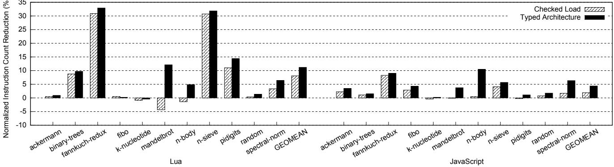
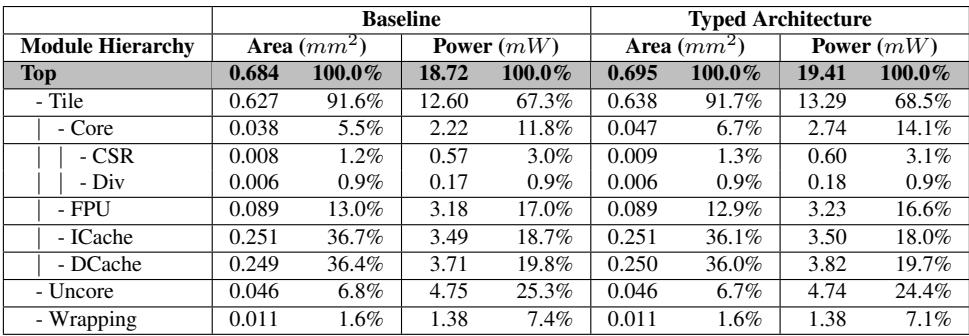
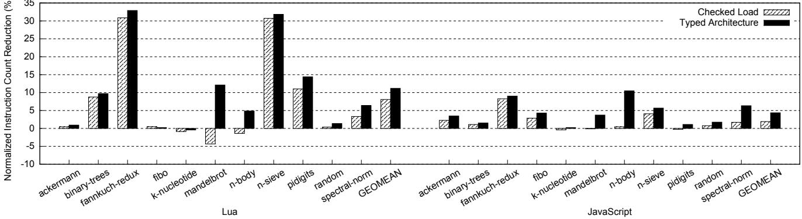
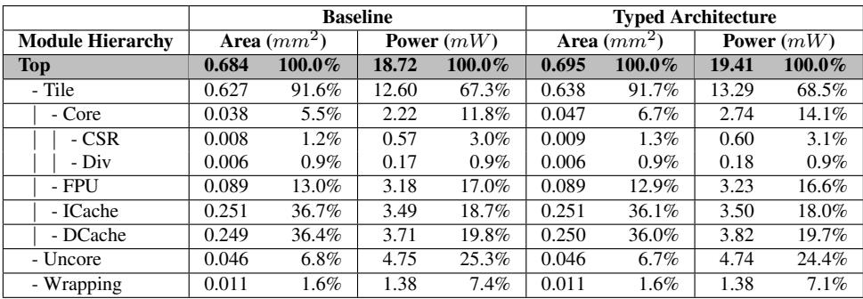
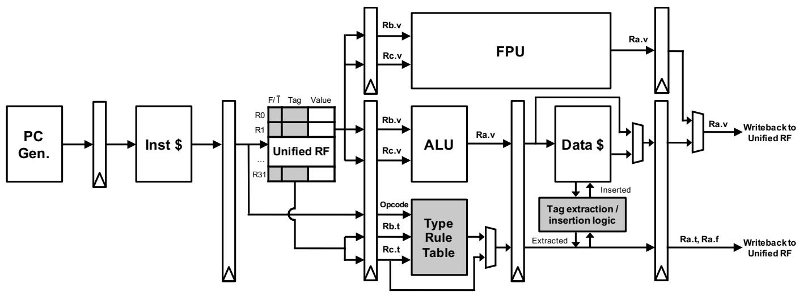
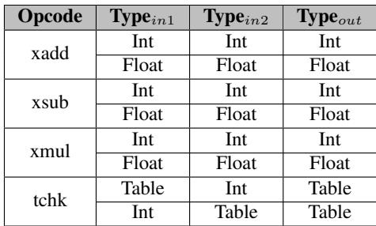
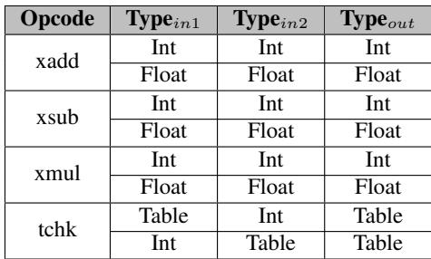
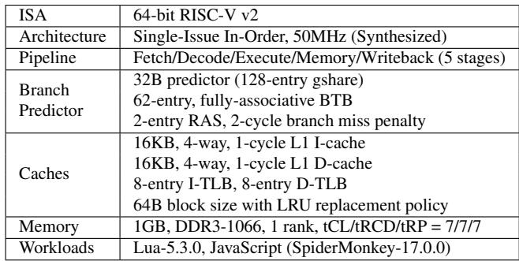
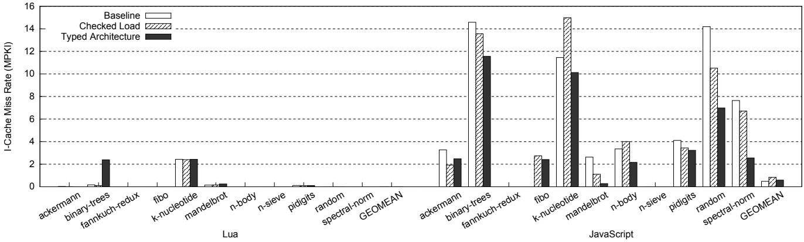
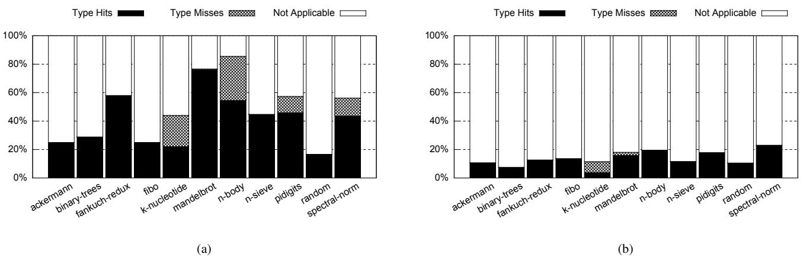

Typed Architectures: Architectural Support for Lightweight Scripting 论文解析¶
0. 论文基本信息¶
作者 (Authors): Channoh Kim, Jaehyeok Kim, Sungmin Kim, et al.
发表期刊/会议 (Journal/Conference): ASPLOS
发表年份 (Publication Year): 2017
研究机构 (Affiliations): Sungkyunkwan University, Suwon, Korea, Seoul National University, Seoul, Korea
1. 摘要¶
目的
- 解决动态脚本语言（如 JavaScript、Lua）在资源受限的 IoT 设备上因动态类型系统导致的高开销问题。该开销体现在指令数、内存占用和能耗上，使得这些高生产力语言难以部署。
- 提出一种低成本、高效率的硬件执行基底，以加速解释器（而非 JIT 编译器）的执行，因为 JIT 在 IoT 设备上通常不可行。
方法
- 提出 Typed Architectures，一种新型处理器架构，在 ISA 层面为每个数据变量保留高层类型信息。
- 核心设计包括：
- 统一寄存器文件 (Unified Register File)：每个寄存器条目扩展了 8-bit type 字段和 1-bit F/Ī 字段，以同时存储值、类型标签和子类型（整数/浮点）标志。
- 多态指令 (Polymorphic Instructions)：引入
xadd、xsub、xmul等指令，它们在流水线中根据操作数类型动态绑定到正确的原生指令（如add或fadd）。 - 类型规则表 (Type Rule Table)：一个小型 CAM，用于在硬件中并行执行类型检查。若查表命中，则正常执行并写回结果类型；若未命中（类型误判），则跳转到由 Handler Register (Rhdl) 指向的慢路径进行软件处理。
- 带标签的内存指令 (Tagged Memory Instructions)：
tld(tagged load) 和tsd(tagged store) 指令，配合三个特殊用途寄存器 (Roffset,Rshift,Rmask)，提供灵活且高效的类型标签提取与插入机制，以适应不同脚本引擎（如 Lua 和 SpiderMonkey）的数据布局。
- 通过修改字节码解释器循环，将热点字节码（如
ADD,GETTABLE）替换为使用上述新 ISA 特性的代码。
结果
- 在基于 RISC-V Rocket Core 的 FPGA 原型上，对 Lua 和 JavaScript (SpiderMonkey) 两个生产级脚本引擎进行了评估。
- 性能提升：
- Lua: 几何平均加速 9.9%，最高加速 43.5%。
- JavaScript: 几何平均加速 11.2%，最高加速 32.6%。
- 性能优于现有技术 Checked Load [30]（其 Lua 和 JS 的几何平均加速分别为 7.3% 和 5.4%）。
- 硬件开销与能效（基于 TSMC 40nm 工艺综合）：
- 面积开销仅为 1.6%。
- 功耗增加 3.7%。
- 能量-延迟积 (EDP) 显著改善：Lua 提升 16.5%，JavaScript 提升 19.3%。
| 指标 | Lua | JavaScript |
|---|---|---|
| 几何平均加速 | 9.9% | 11.2% |
| 最高加速 | 43.5% | 32.6% |
| 动态指令数减少 | 11.2% | 4.4% |
| EDP 改善 | 16.5% | 19.3% |
| 面积开销 | colspan="2" | 1.6% |
 Figure 5: Overall speedups for Lua and JavaScript interpreters (the higher, the better)
 Figure 6: Reduction of dynamic instruction count (the higher, the better)
 Table 8: Hardware overhead breakdown (area, power)
Figure 5: Overall speedups for Lua and JavaScript interpreters (the higher, the better)
 Figure 6: Reduction of dynamic instruction count (the higher, the better)
 Table 8: Hardware overhead breakdown (area, power)
结论
- Typed Architectures 通过在 ISA 和微架构层面集成类型感知能力，成功地将动态类型检查的大部分开销从软件转移到硬件，实现了隐式和并行化的类型处理。
- 该方案具有高灵活性（支持多种脚本语言）、高性能（显著加速）和低成本（极低的面积和功耗开销）的特点。
- 实验结果证明，Typed Architectures 是一种切实可行且高效的解决方案，能够有效推动高生产力的动态脚本语言在资源受限的 IoT 平台上的应用。
2. 背景知识与核心贡献¶
研究背景
- 动态脚本语言（如 JavaScript、Lua）因其高生产力特性（动态类型、自动内存管理等）被广泛用于 Web 和 IoT 应用开发。
- 然而，其动态类型系统在运行时需要为每个变量携带类型标签 (type tag) 并执行类型检查 (type checking)，这带来了巨大的性能开销（指令数、内存占用、能耗），尤其在资源受限的IoT 单板计算机（如 Raspberry Pi）上，使得基于解释器的方案效率低下。
- 传统的软件优化技术（如 JIT 编译）因自身高昂的内存和计算成本，在 IoT 设备上往往不可行。
研究动机
- 动态类型检查的开销主要体现在三个方面：
- Tag extraction: 从内存中提取类型标签（可能需要移位和掩码操作）。
- Tag checking: 比较操作数类型并分发到正确的操作函数（涉及多次比较和条件分支）。
- Tag insertion: 将新值与其类型标签一同存回内存。
- 如
 Figure 1: (a) Usages of polymorphic ”+” (add) operator in Lua; (b) Bytecode ADD in C; (c) RISC-V assembly code 所示，像
Figure 1: (a) Usages of polymorphic ”+” (add) operator in Lua; (b) Bytecode ADD in C; (c) RISC-V assembly code 所示，像 ADD这样的多态字节码，其大部分汇编指令都用于类型检查。 - 如
 Figure 2: (a) Breakdown of dynamic bytecodes in Lua; (b) Dynamic instruction count per bytecode for top five bytecodes 所示，少数几个多态字节码（如
Figure 2: (a) Breakdown of dynamic bytecodes in Lua; (b) Dynamic instruction count per bytecode for top five bytecodes 所示，少数几个多态字节码（如 ADD,GETTABLE）占据了动态指令的绝大部分，且其中很大比例是类型检查开销。 - 现有的硬件加速方案存在局限性：要么针对特定语言，要么覆盖范围窄，无法在低成本的前提下提供通用、高效的解决方案。
核心贡献
- 提出了 Typed Architectures，一种通过 ISA 扩展来高效支持动态脚本语言的新型处理器架构。
- ISA 扩展设计:
- 统一寄存器文件 (Unified register file): 为每个寄存器条目增加 8-bit type 字段和 1-bit F/Ī 字段，以在硬件层面保留高阶类型信息。
- 多态 ALU 指令 (Polymorphic instructions): 引入
xadd,xsub,xmul等指令，它们能在流水线中根据操作数类型隐式地绑定到正确的原生指令（如add或fadd），并通过 Type Rule Table 进行硬件级类型检查。 - 带标签的访存指令 (Tagged memory instructions): 引入
tld(tagged load) 和tsd(tagged store)，并配合三个专用寄存器 (Roffset,Rshift,Rmask)，以灵活高效地处理不同脚本引擎的标签-值对 (tag-value pairs) 内存布局。
- 低开销实现:
- 在 RISC-V Rocket Core 上实现了完整的、可综合的 RTL 原型。
- 评估显示，该方案仅带来 1.6% 的面积开销，却能为 Lua 和 JavaScript 解释器分别带来 9.9% 和 11.2% 的几何平均加速比，以及 16.5% 和 19.3% 的能量延迟积 (EDP) 改进。
3. 核心技术和实现细节¶
0. 技术架构概览¶
整体技术架构
本文提出的 Typed Architectures 是一种为动态脚本语言设计的、低开销高效率的处理器架构。其核心思想是在 ISA (Instruction Set Architecture) 层面为每个数据变量保留高阶类型信息，并将动态类型检查从软件层面卸载到硬件流水线中隐式并行执行，从而大幅减少指令开销。
- 基础平台: 该架构基于开源的 RISC-V Rocket Core 进行扩展，目标是为资源受限的 IoT 设备提供高效的脚本执行环境。
- 核心机制: 通过引入统一寄存器文件、带类型标签的指令和可配置的内存访问路径，在硬件层面直接管理类型信息，实现对 Lua 和 JavaScript 等脚本引擎的透明加速。
ISA 扩展
Typed Architectures 对基础 RISC-V ISA 进行了三项关键扩展：
-
统一寄存器文件 (Unified Register File):
- 每个寄存器条目被扩展为包含三个字段：
value(值),type(8-bit 类型标签), 和F/Ī(1-bit 浮点/整数子类型标志)。 - 该设计允许寄存器统一存放整数和浮点值，并携带其类型信息。
- 每个寄存器条目被扩展为包含三个字段：
-
带类型标签的 ALU 指令 (Tagged ALU Instructions):
- 引入了 xadd, xsub, xmul 三种多态指令 (polymorphic instructions)。
- 这些指令在执行时，会利用操作数的类型标签查询一个名为 Type Rule Table 的小型硬件表。
- 若命中，则根据操作数类型（如整数或浮点）在流水线内绑定到对应的原生指令（如
add或fadd），并行完成计算和类型检查。 - 若未命中（类型误判, type misprediction），则跳转到由 Handler Register (Rhdl) 指向的慢速路径 (slow path)，由软件处理复杂的类型转换或分发逻辑。
- 若命中，则根据操作数类型（如整数或浮点）在流水线内绑定到对应的原生指令（如
-
带类型标签的内存指令 (Tagged Memory Instructions):
- 引入 tld (tagged load) 和 tsd (tagged store) 指令，用于一次性加载或存储值-类型对 (tag-value pair)。
- 为了适应不同脚本引擎（如 Lua 和 SpiderMonkey）各异的值-类型对内存布局，架构提供了三个特殊用途寄存器来灵活配置标签的提取和插入逻辑：
- Roffset: 指定类型标签相对于数据值所在的双字 (double-word) 位置（同字、前一字或后一字）。
- Rshift: 指定类型标签在目标双字内的起始位。
- Rmask: 提供一个 8-bit 掩码用于精确提取类型标签。
- 此外，还提供了 thdl, tchk, tget, tset 等辅助指令，用于设置异常处理地址、执行独立类型检查以及显式读写寄存器的类型标签。
 Table 2: Description of Extended ISA (64-bit)
Table 2: Description of Extended ISA (64-bit)
微架构实现 (Pipeline Organization)
该架构在处理器流水线中集成了新的硬件模块以支持上述 ISA 扩展。
- 关键新增硬件:
- 统一寄存器文件: 替换原有的无类型寄存器文件。
- Type Rule Table: 一个小型的内容可寻址存储器 (CAM)，以
(源操作数1类型, 源操作数2类型, 操作码)为键，输出结果的类型标签。 - 标签提取/插入逻辑: 位于内存访问路径上，由
Roffset,Rshift,Rmask寄存器配置，通过移位和掩码操作实现灵活的标签处理。
 Figure 4: Pipeline structure augmented with Typed Architecture
代码转换与应用
为了利用 Typed Architectures，需要对现有的脚本解释器（如 Lua-5.3.0 和 SpiderMonkey-17.0.0）进行改造，将热点字节码（如 ADD, GETTABLE）替换为使用新 ISA 指令的版本。
-
Lua 实现细节:
- Lua 使用 16-byte 结构体存储变量（8-byte 值 + 1-byte 标签）。
- 特殊寄存器配置为：
Roffset=0b001(标签在下一个双字),Rmask=0xFF,Rshift=0b000000。 - 利用
F/Ī位区分内部的Int和Float子类型。
-
SpiderMonkey (JavaScript) 实现细节:
- SpiderMonkey 采用 NaN-boxing 技术，在一个 64-bit 的 IEEE 754 双精度浮点数中编码非数字类型。
- 对于非 FP 值，类型信息存储在特定的位段中。
- 特殊寄存器配置为：
Roffset=0b100(启用 NaN 检测),Rshift=47,Rmask=0x0F(提取 4-bit 类型)。
 Table 4: Special-purpose register settings
 Table 5: Type Rule Table settings for Lua and SpiderMonkey
Table 4: Special-purpose register settings
 Table 5: Type Rule Table settings for Lua and SpiderMonkey
性能与开销
该架构在保持极低硬件开销的同时，显著提升了脚本执行性能。
-
性能提升:
- 在 FPGA 上评估，相比基线，对 Lua 和 JavaScript 解释器分别实现了 9.9% 和 11.2% 的几何平均加速比，最高加速比分别达到 43.5% 和 32.6%。
- 性能提升主要来源于动态指令数的减少、分支预测压力的降低以及指令缓存压力的缓解。
-
硬件开销:
- 在 40nm 工艺下综合，仅带来 1.6% 的面积开销和 3.7% 的功耗增加。
- 能量-延迟积 (EDP) 得到显著改善，Lua 和 JavaScript 分别提升了 16.5% 和 19.3%。
- 关键路径未受影响，证明了其低开销特性。
Table 8: Hardware overhead breakdown (area, power)
1. 统一寄存器文件 (Unified Register File)¶
统一寄存器文件的设计原理与实现
- 核心目标：在 ISA (Instruction Set Architecture) 层面为每个数据值保留高阶类型信息，从而将动态类型检查从软件层面卸载到硬件层面，以减少指令开销。
- 基础结构：在原有的 RISC-V 寄存器文件 (Register File) 基础上进行扩展，为每个寄存器条目增加两个新的元数据字段：
- 8-bit type 字段：用于存储由脚本引擎定义的类型标签 (type tag)。该设计认为 256 种类型足以覆盖大多数脚本语言的场景，必要时可通过简单的重编码适配。
- 1-bit F/Ī 字段：这是一个标志位，用于快速区分数值子类型。
0表示 integer subtype，1表示 floating-point (FP) subtype。此位可由软件（通过扩展现有类型字段）或硬件（通过查询预设的类型值表）提供。
- 寄存器条目格式：经过扩展后，一个完整的寄存器条目
R包含三个部分：R.v：实际的数据值 (value)。R.t：对应的类型标签 (type)。R.f：F/Ī 标志位。
- “统一”的含义：该寄存器文件被称为“统一”，是因为它能够同时容纳 integer 和 FP 两种类型的值及其元数据，无需像传统架构那样维护分离的整数和浮点寄存器堆。
在整体架构中的作用与数据流
- 作为类型信息的载体：统一寄存器文件是整个 Typed Architectures 方案的核心数据存储单元。所有类型相关的操作（如检查、传播、更新）都围绕此文件进行。
- 与新指令集的交互：
- Tagged ALU instructions (如
xadd,xsub,xmul) 在执行时，会直接从源寄存器的R.t和R.f字段读取类型信息，用于在流水线中进行隐式类型检查和指令绑定。 - Tagged memory instructions (如
tld,tsd) 负责将内存中的 tag-value pair 加载到寄存器中，填充R.v、R.t和R.f；反之亦然。 - Miscellaneous instructions (如
tget,tset) 允许软件显式地读写寄存器的类型标签，提供了灵活性。
- Tagged ALU instructions (如
- 输入输出关系：
- 输入：来自内存（通过
tld）或由其他指令产生的带有类型信息的数据。 - 处理：在执行
x系列指令时，硬件利用R.t和R.f查询 Type Rule Table，决定是走快速路径（执行原生add/fadd并写回结果类型）还是跳转到慢速路径（由Rhdl指向的软件处理程序）。 - 输出：计算结果连同其新的类型标签（从 Type Rule Table 中查得）一起写回到目标寄存器的
R.v和R.t字段。
- 输入：来自内存（通过
参数设置与灵活性
- 8-bit type 的宽度是一个关键设计权衡。它在灵活性（支持多种类型）和硬件成本（寄存器文件面积开销）之间取得了平衡。论文评估显示，此设计仅带来 1.6% 的总面积开销。
- F/Ī 位的设计巧妙地解决了数值子类型分发的问题。对于像 Lua 这样内部区分
Int和Float的引擎，或者像 SpiderMonkey 这样使用 NaN-boxing 技术的引擎，该位都能提供一种高效、统一的方式来引导 ALU 选择正确的计算单元（整数 ALU 或 FP ALU）。
Figure 4: Pipeline structure augmented with Typed Architecture
对不同脚本引擎的适配示例
-
Lua：
- Lua 使用一个结构体来存储 tag-value pair，其中 8 字节的值后面紧跟 1 字节的标签。
- 其内部
Number类型有Int和Float两个子类型。 - 为了利用 F/Ī 位，论文中提到将原始的类型标签扩展了 1 位，用其 MSB (Most Significant Bit) 来表示
F/Ī状态。
-
SpiderMonkey (JavaScript)：
- SpiderMonkey 采用 NaN-boxing 技术，将非 FP 值（如整数、布尔值）编码在 IEEE 754 NaN 值的特定比特位中。
- 对于 FP 值，
F/Ī位被设为1。 - 对于非 FP 值（即 NaN），硬件中的 NaN detection 逻辑会被激活（通过
Roffset寄存器的 MSB 控制），并从指定位置提取 4 位类型字段。此时，F/Ī位被设为0，表明这是一个需要特殊处理的整数或其它类型。
下表总结了为这两个引擎配置的特殊用途寄存器，这些配置直接影响 tld/tsd 指令如何从内存中提取或插入类型标签，最终填充到统一寄存器文件中。
| Engine | Roffset |
Rshift |
Rmask |
Tag Location & Extraction Logic |
|---|---|---|---|---|
| Lua | 0b001 |
0b000000 |
0xFF |
Tag is in the next double-word, at bit offset 0, and is 8 bits wide. |
| SpiderMonkey | 0b100 |
0b101111 (47) |
0x0F |
For non-FP (NaN) values, tag is in the same double-word, extracted by shifting right by 47 bits and applying a 4-bit mask. |
2. 多态指令 (Polymorphic Instructions)¶
多态指令的实现原理与核心机制
- 多态指令（如
xadd,xsub,xmul）是 Typed Architectures 的核心创新，旨在通过硬件直接处理动态类型语言中操作符的重载问题。 - 其基本思想是将软件层面复杂的类型检查（Type Checking）和方法分派（Method Dispatch）逻辑下沉到硬件流水线中执行。
- 每条多态指令在解码阶段（Decode Stage）会根据其操作数寄存器中的F/Ī 位（Floating-point / Integer-not bit）来决定具体的计算路径：
- 如果两个操作数的 F/Ī 位均为 0，则绑定到整数 ALU 的
add指令。 - 如果两个操作数的 F/Ī 位均为 1，则绑定到浮点单元 FPU 的
fadd指令。 - 如果操作数类型混合（一个整数一个浮点），则无法在快速路径中处理，会触发类型误预测（Type Misprediction）。
- 如果两个操作数的 F/Ī 位均为 0，则绑定到整数 ALU 的
- 类型规则的合法性由一个名为 Type Rule Table 的小型内容可寻址存储器（CAM）进行验证。该表以
(源操作数1类型, 源操作数2类型, 操作码)为键进行查询。- 若查询命中（Hit），则流水线正常执行，并将查表得到的输出类型标签写回目标寄存器。
- 若查询未命中（Miss），则发生类型误预测，程序计数器 PC 被重定向到由 Handler Register (Rhdl) 指向的慢速路径（Slow Path），即原有的软件解释代码。
Figure 4: Pipeline structure augmented with Typed Architecture
输入输出关系及在整体架构中的作用
- 输入：
- 两个源操作数寄存器，每个寄存器包含三个字段：值（value）、8位类型标签（type）和 1位 F/Ī 标志（f）。
- 当前执行的多态指令操作码（如
xadd）。
- 输出：
- 目标寄存器被写入计算结果的值（value）。
- 目标寄存器的类型标签（type）和 F/Ī 位（f）被更新为 Type Rule Table 查询返回的结果。
- 在整体架构中的作用：
- 显著减少动态指令数：通过一条
xadd指令替代了软件中用于标签提取、标签比较、条件分支和值计算的多条指令序列。 - 降低分支预测压力：消除了大量因类型检查而产生的条件跳转，从而降低了分支误预测率（Branch Misprediction Rate），如图7所示。
- 提升能效比：由于指令数和分支复杂度的降低，结合微小的硬件开销（1.6%面积），实现了 16.5%-19.3% 的能量延迟积（EDP）。
- 显著减少动态指令数：通过一条
参数设置与配置
- Type Rule Table 的内容在程序启动时由软件一次性预加载，其配置取决于所运行的脚本引擎的类型系统。
- 例如，在 Lua 中，规则表会定义
(Int, Int, ADD) -> Int和(Float, Float, ADD) -> Float等规则。 - 在 SpiderMonkey (JavaScript) 中，规则表同样需要适配其基于 NaN-boxing 的内部表示。
- 例如，在 Lua 中，规则表会定义
- **Handler Register **(Rhdl) 由
thdl指令在执行字节码前显式设置，指向对应字节码（如ADD）的慢速路径处理函数入口。
Table 5: Type Rule Table settings for Lua and SpiderMonkey
与现有技术的对比优势
- 相较于 Checked Load [30] 等仅优化类型检查的方案，多态指令提供了端到端（End-to-End）的加速，同时处理了类型检查和值计算。
- Checked Load 的快速路径在编译时固定，只能优化一种类型组合（如整数），而多态指令通过 F/Ī 位和 Type Rule Table 能自适应地（Adaptively）处理多种类型组合（整数和浮点），无需重新编译，性能更稳健（Robust）。
3. 带标签的内存指令 (Tagged Memory Instructions)¶
带标签的内存指令 (Tagged Memory Instructions) 实现原理
- Typed Architectures 引入了两条核心指令 tld (tagged load) 和 tsd (tagged store) 来处理内存中标签-值对 (tag-value pairs) 的加载与存储。
- 这两条指令的设计核心在于其灵活性，能够适应不同脚本引擎（如 Lua 和 JavaScript/SpiderMonkey）各异的内存数据布局，而无需为每种布局定制硬件。
- 为了实现这种灵活性，硬件提供了三个特殊用途寄存器 (special-purpose registers)，用于在运行时动态配置标签的提取和插入逻辑：
- Roffset (Offset Register): 一个 3-bit 寄存器，用于指定标签相对于数据值所在的 double-word 位置。
- 最低 2 位 (LSBs) 定义了三种选择：标签与值在同一个 double-word (
00)、在下一个 double-word (01)、或在上一个 double-word (11)。 - 最高 1 位 (MSB) 用于控制 NaN 检测功能的开关，这对于像 SpiderMonkey 这样利用 NaN-boxing 技术的引擎至关重要。
- 最低 2 位 (LSBs) 定义了三种选择：标签与值在同一个 double-word (
- Rshift (Shift Amount Register): 一个 6-bit 寄存器，指定了在目标 double-word 中，标签字段的起始比特位。这使得硬件可以从任意位置开始提取标签。
- Rmask (Mask Register): 一个 8-bit 寄存器，用作掩码来精确提取出 8-bit 宽度的类型标签。
- Roffset (Offset Register): 一个 3-bit 寄存器，用于指定标签相对于数据值所在的 double-word 位置。
Table 2: Description of Extended ISA (64-bit)
算法流程与输入输出关系
-
tld 指令流程:
- 输入: 内存地址（指向数据值）。
- 执行:
- 从指定地址加载数据值。
- 根据 Roffset 的值，确定包含标签的 double-word 的地址（可能是同一个、前一个或后一个）。
- 从该 double-word 中，根据 Rshift 的值进行右移操作，将标签字段对齐到最低有效位。
- 对移位后的结果应用 Rmask 进行按位与操作，最终提取出纯净的 8-bit 类型标签。
- （可选）如果 Roffset 的 MSB 被置位且值为 NaN，则启用 NaN 检测逻辑来解析标签。
- 输出: 将提取出的数据值、类型标签以及推断出的 F/Ī 位（指示是整数还是浮点数子类型）一并写入目标统一寄存器文件 (unified register file) 的对应字段中。
-
tsd 指令流程:
- 输入: 源寄存器（包含值、标签和 F/Ī 位）以及目标内存地址。
- 执行:
- 将源寄存器中的数据值写入指定的内存地址。
- 执行 tld 的逆操作：使用相同的 Roffset, Rshift, 和 Rmask 配置。
- 将 8-bit 类型标签根据 Rmask 和 Rshift 进行扩展和移位，以匹配目标内存布局。
- 根据 Roffset 的值，将处理好的标签写入正确的相邻 double-word（或同一个 double-word）中。
- 输出: 在内存中正确地存储了符合特定脚本引擎格式的标签-值对。
在整体架构中的作用与参数设置实例
- 这些指令的作用是无缝桥接软件层面的动态类型系统与硬件层面的高效执行。它们消除了在软件中进行繁琐的移位 (shift) 和掩码 (mask) 操作来管理类型标签的开销，从而显著减少了动态指令计数。
- 这些特殊寄存器通常在脚本引擎初始化时设置一次，之后在整个执行过程中保持不变，确保了运行时的高效性。
Table 4: Special-purpose register settings
- 上表展示了针对 Lua 和 SpiderMonkey 的具体寄存器配置：
- Lua: 其数据结构是一个 8-byte 值后紧跟一个 1-byte 标签。因此，Roffset 设为
0b001（标签在下一个 double-word），Rshift 为0（标签在 double-word 的起始处），Rmask 为0xFF（提取完整的 8-bit 标签）。 - SpiderMonkey: 使用 NaN-boxing 技术，标签嵌入在 64-bit 浮点数的特定高位中。因此，Roffset 设为
0b100（启用 NaN 检测，标签与值在同一个 double-word），Rshift 为47（将第 47 位及之后的标签移至低位），Rmask 为0x0F（只提取 4-bit 的类型字段）。
- Lua: 其数据结构是一个 8-byte 值后紧跟一个 1-byte 标签。因此，Roffset 设为
4. 类型规则表 (Type Rule Table)¶
类型规则表 (Type Rule Table) 的实现原理与作用
- 类型规则表 (Type Rule Table) 被设计为一个小型内容可寻址存储器 (Content-Addressable Memory, CAM)，其核心功能是在执行 xadd, xsub, xmul 等多态指令时，根据操作数的动态类型信息即时决定操作的有效性及结果类型。
- 该表在处理器流水线中的位置紧邻执行阶段，使得类型检查与值计算能够并行进行，从而将原本由软件显式完成的类型检查开销转移到硬件中隐式处理。
输入输出关系与查询流程
- 输入: 类型规则表接受三个关键输入作为查询键 (Key):
- 第一个源操作数的 8-bit type tag (来自统一寄存器文件
R.t)。 - 第二个源操作数的 8-bit type tag。
- 当前执行的多态指令的操作码 (opcode) (例如
xadd)。
- 第一个源操作数的 8-bit type tag (来自统一寄存器文件
- 查询与匹配:
- 硬件使用上述三元组
(src1_type, src2_type, opcode)作为键，在类型规则表中进行并行查找。 - 如果找到匹配项，则视为命中 (hit)。
- 如果未找到任何匹配项，则视为类型误判 (type misprediction)。
- 硬件使用上述三元组
- 输出:
- 在命中情况下，表会输出一个预定义的 8-bit output type tag。此标签随后被写入目标寄存器的类型字段
R.t中。 - 在未命中情况下，处理器不会产生异常，而是将程序计数器 (PC) 重定向到由处理器状态寄存器
Rhdl所指向的慢速路径 (slow path) 地址。该慢速路径是原有的、由软件实现的完整类型检查和分派逻辑。
- 在命中情况下，表会输出一个预定义的 8-bit output type tag。此标签随后被写入目标寄存器的类型字段
参数设置与初始化
- 类型规则表的内容并非硬编码，而是在脚本引擎启动时，根据其特定的类型系统和操作语义进行一次性预加载 (pre-loaded only once at program launch)。
- 表的具体内容由脚本引擎的类型规则决定。例如，对于 Lua 引擎，其规则可能包括
(Int, Int, ADD) -> Int和(Float, Float, ADD) -> Float，但不包括(Int, String, ADD)，后者会触发未命中。 - Table 5: Type Rule Table settings for Lua and SpiderMonkey
- 如上图所示，Lua 和 SpiderMonkey 的类型规则表设置反映了它们各自对数字子类型（整数
Int与浮点数Float）的不同处理方式。Lua 明确区分了Int和Float子类型，而 SpiderMonkey 则主要使用Number类型，并通过F/Ī位来区分内部表示。
在整体架构中的作用
- 性能加速: 通过硬件并行处理类型检查，显著减少了动态脚本语言解释器中用于类型守卫 (type guards) 的动态指令数量。评估显示，这为 Lua 和 JavaScript 分别带来了 9.9% 和 11.2% 的几何平均加速比。
- 灵活性保障: 由于规则表内容可由软件配置，同一套 Typed Architecture 硬件可以支持具有不同类型系统的多种脚本语言（如 Lua 和 JavaScript），实现了高灵活性的设计目标。
- 低成本实现: 论文指出，该表仅包含 8个条目，硬件开销极小。合成结果显示，整个 Typed Architecture 仅带来 1.6% 的面积开销，证明了其低硬件成本的特性。
- 与 F/Ī 位协同: 类型规则表负责高层次的类型兼容性检查，而具体的计算路径选择（整数 ALU 或 FP ALU）则由寄存器中的 F/Ī 位在译码阶段决定。两者协同工作，共同实现了高效的多态操作。
5. 类型检查与慢速路径处理¶
类型检查与慢速路径处理机制
- Typed Architectures 的核心思想是将动态类型检查从软件层面卸载到硬件层面，以减少指令开销。然而，并非所有类型组合都能被硬件预知和处理，因此必须设计一个高效的慢速路径 (slow path) 作为后备方案。
- 慢速路径本质上是原有的、完整的软件实现，它能处理所有复杂的、未被硬件覆盖的类型情况（如不同类型间的隐式转换、字符串拼接等）。
硬件类型检查流程与指令协同
- 初始化阶段：在执行可能触发类型检查的字节码（如
ADD）前，解释器会使用thdl指令显式设置一个特殊寄存器Rhdl的值。thdl指令的操作数是一个立即数或寄存器，其值为对应字节码慢速路径处理函数（例如ADD_slow）的入口地址。- 这一步至关重要，因为它为后续可能发生的类型检查失败提供了明确的跳转目标。
- 执行阶段：当执行一条多态指令 (polymorphic instruction)（如
xadd,xsub,xmul）或显式的类型检查指令tchk时，硬件会并行执行以下操作：- 类型规则查询：硬件访问一个小型的 Type Rule Table，该表以两个源操作数的类型标签（
R.t）和当前指令的操作码（opcode）作为联合键（key）进行查找。 - 命中 (Hit)：如果 Type Rule Table 中存在对应的条目，则：
- 硬件根据操作数的 F/Ī 位（标识整数或浮点数子类型）选择正确的 ALU 路径（整数加法器或浮点加法器）来执行计算。
- 将 Type Rule Table 返回的输出类型标签写入目标寄存器的类型字段（
Rd.t）。 - 指令正常完成，流水线继续执行下一条指令。
- 未命中 (Miss)：如果 Type Rule Table 中没有找到匹配的条目，则发生类型误判 (type misprediction)：
- 硬件不抛出异常，而是直接将程序计数器（PC）重定向到
Rhdl寄存器中存储的地址。 - 控制流跳转至由
thdl指令预先设定好的慢速路径，由软件代码接管后续处理。 - 由于慢速路径包含了完整的逻辑，它可以安全地处理任何复杂情况，并在完成后返回到主解释循环。
- 硬件不抛出异常，而是直接将程序计数器（PC）重定向到
- 类型规则查询：硬件访问一个小型的 Type Rule Table，该表以两个源操作数的类型标签（
 Figure 3: Transformed bytecode ADD
Figure 3: Transformed bytecode ADD
Type Rule Table 的配置与作用
- Type Rule Table 是一个内容可寻址存储器（CAM），其内容在脚本引擎启动时根据所支持的语言（如 Lua 或 JavaScript）进行静态初始化。
- 表中的条目定义了哪些输入类型组合对于特定操作是合法的，以及结果的类型是什么。
| 脚本引擎 | 输入类型A | 输入类型B | 操作码 | 输出类型 | 备注 |
|---|---|---|---|---|---|
| Lua | Int | Int | ADD | Int | 整数加法 |
| Lua | Float | Float | ADD | Float | 浮点加法 |
| Lua | Int | Float | ADD | 未命中 | 触发慢速路径进行类型转换 |
| SpiderMonkey | Int | Int | ADD | Int | 整数加法 |
| SpiderMonkey | Double | Double | ADD | Double | 浮点加法 |
Table 5: Type Rule Table settings for Lua and SpiderMonkey
慢速路径处理的输入输出关系
- 输入：
- 慢速路径函数接收的输入是原始的、未经硬件修改的虚拟机状态，包括操作数栈或寄存器中的完整值和类型信息。
- 它拥有对整个解释器上下文的完全访问权限。
- 输出：
- 慢速路径执行完毕后，会将计算结果（包括值和正确的类型标签）写回到虚拟机指定的位置（如栈顶或某个寄存器）。
- 然后，它会直接跳转回主解释循环的下一条字节码处，不会返回到触发它的那条多态指令。这是因为硬件的快速路径和软件的慢速路径是互斥的两种执行模式。
在整体架构中的作用
- 性能与灵活性的平衡：通过将最常见的、简单的类型操作（如整数+整数）交给硬件快速处理，而将复杂的、罕见的情况交给软件慢速处理，Typed Architectures 在极低的硬件成本（1.6% 面积开销）下实现了显著的性能提升（9.9%-11.2% 几何平均加速比）。
- 简化硬件设计：硬件无需处理复杂的类型转换逻辑，只需负责高速的类型匹配和基本运算，大大降低了设计的复杂性。
- 保证语义正确性：慢速路径作为功能完备的后备方案，确保了无论硬件是否能处理，程序的最终行为都与纯软件解释器完全一致，维护了语言的语义。
4. 实验方法与实验结果¶
实验设置
- 硬件平台: 基于开源的 64-bit RISC-V Rocket Core 构建了一个完全可综合的 RTL 模型，使用 Chisel 语言编写，并编译为 Verilog。
- FPGA 验证: 使用 Xilinx ZC706 FPGA 进行指令和周期计数。
- ASIC 合成: 使用 Synopsys Design Compiler 和 TSMC 40nm CLN40G 工艺库（包括 SC9 标准单元库和 ARM Artisan SRAM 库）进行面积和功耗评估。
- 软件栈:
- 脚本引擎：Lua 5.3.0 (寄存器式 VM) 和 SpiderMonkey 17.0.0 (JavaScript, 栈式 VM)。
- 编译器：RISC-V toolchain 中的 gcc 5.2.0，编译选项为
-O3。 - 对比基线：实现了一个基于 FPGA 的 Checked Load [30] 方案作为当前最先进硬件方案的代表。
- 基准测试: 选用并调整了来自 Computer Language Benchmarks Game 的 11 个基准测试程序。替换了在目标引擎上无法运行或主要时间花在原生库上的程序（如
fasta,regex-dna），补充了n-sieve,random,fibo,ackermann。 - 测量方法: 所有基准测试均运行至完成，并从主解释器循环的开始到结束统计指令和周期数。
 Table 6: Evaluation parameters
 Table 7: Benchmarks
Table 7: Benchmarks
结果数据分析
-
整体性能提升:
- Typed Architectures 在 Lua 上实现了 9.9% 的几何平均加速比，最大加速比达 43.5%。
- 在 JavaScript (SpiderMonkey) 上实现了 11.2% 的几何平均加速比，最大加速比达 32.6%。
- 作为对比，Checked Load [30] 的几何平均加速比仅为 7.3% (Lua) 和 5.4% (JS)。
Figure 5: Overall speedups for Lua and JavaScript interpreters (the higher, the better)
-
性能提升来源:
- 动态指令数减少: Typed Architectures 显著减少了动态指令数，Lua 平均减少 11.2%，JS 平均减少 4.4%。这直接源于硬件隐式处理了类型检查、标签提取和插入。 Figure 6: Reduction of dynamic instruction count (the higher, the better)
- 分支预测压力降低: 通过消除软件中的类型守卫（type guards），分支误预测率（MPKI）显著下降。例如，在 Lua 的
fibo和 JS 的fannkuch-redux中，性能提升很大程度上归功于此。 Figure 7: Branch miss rates in misses per kilo-instructions (MPKI) (the lower, the better)
Figure 7: Branch miss rates in misses per kilo-instructions (MPKI) (the lower, the better) - 指令缓存压力降低: 由于解释器核心循环代码变短，指令缓存未命中率（I-cache MPKI）也有所改善，尤其在
binary-trees和random等基准测试中效果明显。  Figure 8: Instruction cache miss rates in misses per kilo-instructions (MPKI) (the lower, the better) - 高类型命中率: 性能提升与 Type Rule Table 的高命中率强相关。对于频繁使用的字节码（如
ADD,GETTABLE），如果其操作数类型组合是常见的，就能高效地走快速路径。  Figure 9: Type hit and miss rates normalized to dynamic bytecode count for (a) Lua and (b) SpiderMonkey
-
硬件开销与能效:
- 面积开销: 仅为 1.6%。
- 功耗开销: 仅为 3.7%。
- 能效提升: 结合性能提升，能量延迟积 (EDP) 得到显著改善，Lua 提升 16.5%，JavaScript 提升 19.3%。
- 关键路径: 分析表明，该设计未影响处理器的关键路径，因为关键路径仍在 FPU 模块中。 Table 8: Hardware overhead breakdown (area, power)
消融实验与对比分析
论文通过与 Checked Load [30] 的详细对比，间接进行了消融分析，突显了 Typed Architectures 设计选择的优势：
-
全面性 vs. 局部性:
- Checked Load 仅将“加载-比较-分支”这一模式合并为一条复杂指令，但标签的计算、插入、移除仍需软件显式处理。
- Typed Architectures 通过 统一寄存器文件 (unified register file) 和 多态指令 (polymorphic instructions)，在 ISA 层面管理类型信息，全面覆盖了标签提取、检查、插入和值计算的整个流程。
-
灵活性 vs. 固定性:
- Checked Load 的快速路径在编译时针对单一类型组合进行优化。例如，为整数优化的 Lua VM 在处理大量浮点运算的
mandelbrot和n-body时收益甚微甚至为负。 - Typed Architectures 的 Type Rule Table 和 F/Ī bit 使其能够自适应不同的类型组合（整数、浮点等），无需重新编译即可在混合工作负载上保持稳健性能。
- Checked Load 的快速路径在编译时针对单一类型组合进行优化。例如，为整数优化的 Lua VM 在处理大量浮点运算的
-
适用性:
- Checked Load 假设了特定的标签-值内存布局（如标签在字的 MSB），适用性受限。
- Typed Architectures 通过 Roffset, Rshift, Rmask 三个特殊寄存器，提供了灵活的标签提取/插入逻辑，成功适配了 Lua（标签在相邻双字）和 SpiderMonkey（利用 NaN-boxing）这两种截然不同的数据布局。
Table 4: Special-purpose register settings